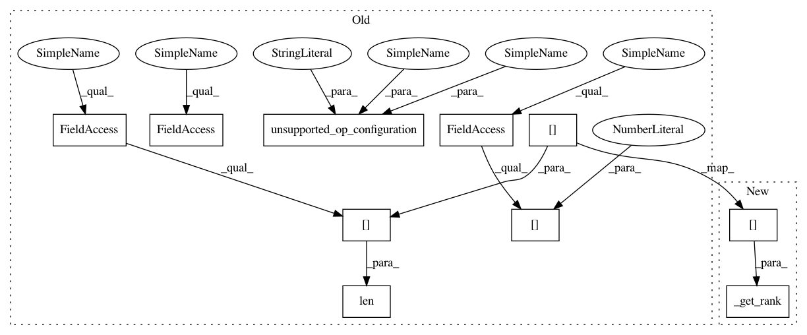

c36bfefbf84ce280195e9589e44aac3ee688b11d,onnx_coreml/_operators_nd.py,,_add_conv_like_op,#Any#Any#Any#Any#Any#Any#Any#,40
Before Change
def _add_conv_like_op(add_func, get_params_func, params_dict,
builder, node, graph, err):
if node.inputs[0] not in graph.shape_dict:
err.unsupported_op_configuration(builder, node, graph, "Input shape not available")
rank = len(graph.shape_dict[node.inputs[0]])
if rank == 4:
get_params_func(builder, node, graph, err, params_dict)
add_func(node.inputs, node.outputs, params_dict=params_dict, builder=builder, node=node, graph=graph, err=err)
After Change
def _add_conv_like_op(add_func, get_params_func, params_dict,
builder, node, graph, err):
rank = builder._get_rank(node.inputs[0])
if rank == 4:
get_params_func(builder, node, graph, err, params_dict)
add_func(node.inputs, node.outputs, params_dict=params_dict, builder=builder, node=node, graph=graph, err=err)
elif rank == 3:
In pattern: SUPERPATTERN
Frequency: 3
Non-data size: 10
Instances
Project Name: onnx/onnx-coreml
Commit Name: c36bfefbf84ce280195e9589e44aac3ee688b11d
Time: 2019-09-11
Author: bhushan.s.94@gmail.com
File Name: onnx_coreml/_operators_nd.py
Class Name:
Method Name: _add_conv_like_op
Project Name: onnx/onnx-coreml
Commit Name: c36bfefbf84ce280195e9589e44aac3ee688b11d
Time: 2019-09-11
Author: bhushan.s.94@gmail.com
File Name: onnx_coreml/_operators_nd.py
Class Name:
Method Name: _convert_bn
Project Name: onnx/onnx-coreml
Commit Name: c36bfefbf84ce280195e9589e44aac3ee688b11d
Time: 2019-09-11
Author: bhushan.s.94@gmail.com
File Name: onnx_coreml/_operators_nd.py
Class Name:
Method Name: _convert_instancenorm